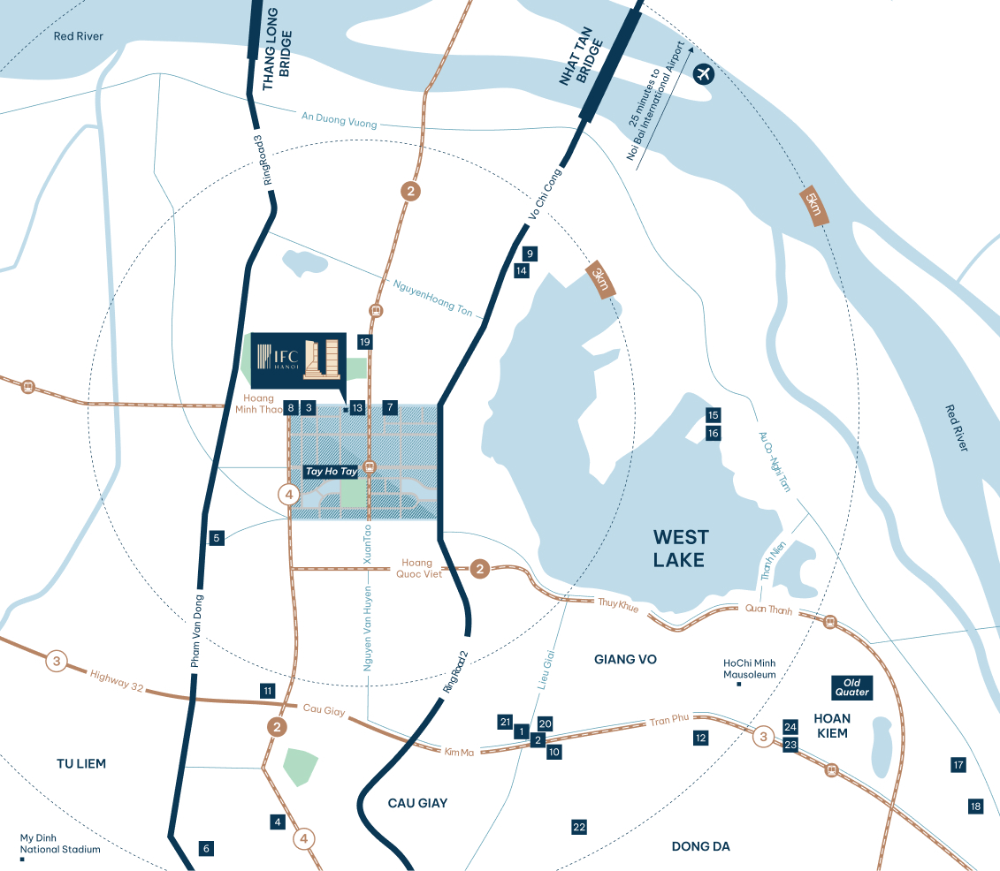
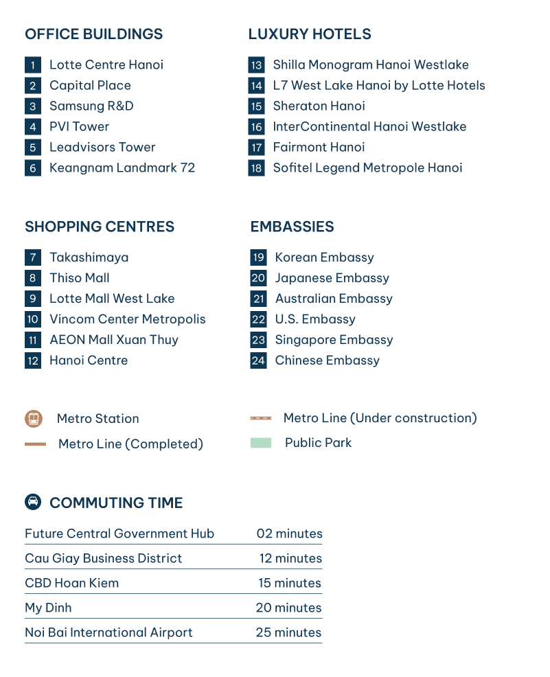

Location
Strategic Location
Tay Ho Tay is emerging as the future of Hanoi’s CBD - a
thriving new destination for growth and international
business. Conceived to meet international standards and set to
become the city’s new administrative centre, it is
strategically located alongside Hanoi’s planned central
government hub.
Connectivity

